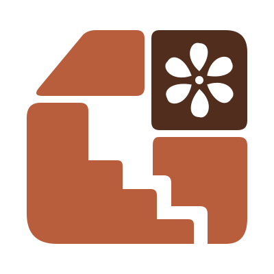

GO ZAR / گذر · DESIGN FOUNDATIONS
Warm. Familiar. Quietly Persian.
A small visual vocabulary for the city-learning experience.
01 / Color
Terracotta / actions
#B85E3CChocolate / text
#512D1DIvory / background
#FFFCF4Sand / quiet surfaces
#F3E9DDGreen / recalled
#34685102 / Persian typography
DISPLAY · 27 / generous line heightهر روز، یک قدم
هر روز، یک قدم
آشناتر با شهر.
خیابانها و ارتباط میان جاها را با تمرینهای کوتاه به یاد بیاور.
CAPTION · 11 · supporting onlyPrototype uses system Tahoma. Select a licensed Persian UI family and validate native shaping and font scaling before implementation.
03 / Actions & selection
خیابانها و محلهها
گزینه انتخابشده✓
گزینه انتخابشده✓
One primary action per decision. Buttons are at least 50 px high in the prototype. Focus indicators remain visible.
04 / Feedback with a reason
✓ درست است؛ ولیعصر!
جهت مسیر و اتصال آن به انقلاب را به یاد بسپار.
پاسخ درست: ولیعصر
به شکل مسیر نگاه کن؛ دوباره فرصت داری.
05 / Shape & space

Soft corners come from the approved modular logo. Keep stepped paths and rosettes as occasional accents, not decorative noise.
Spacing: 4 · 8 · 12 · 16 · 20 · 24 · 32
Radii: 15 px actions · 16 px choices · 22 px surfaces
Map: stable geographic context, labeled states, deliberate contrast.
Accessibility and handoff
Pair color with words or symbols. Preserve RTL reading order, use accessible native controls and allow dynamic type. The prototype is a visual starting point, not a native accessibility audit. Machine-readable values are in tokens.json.
← Back to prototype